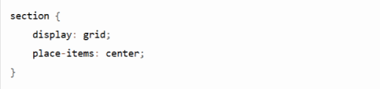

Objective
리네로제는 한국에서 큰 인기를 얻고 있지만, 한국 공식 사이트는 아직 존재하지 않습니다.
고유한 브랜드 가치를 담아 디자인하고, fullpage style을 시도하여 퍼블리싱하는 것을 목표로 선정했습니다.
Design
-
Keyword
- # 깔끔한
- # 통일감
- # 담백한
- # 부드러운
-
Color
-
#F6F6F6
-
#dddddd
-
#777777
-
#222222
-
-
Font
KoPretendard 프리텐다드
EnRadio Canada Big
Publishing
- GSAP ScrollTo와 ScrollTrigger를 fullpage를 구현
- 비동기 함수 setInterval를 활용해 사진이 바꾸는 event 구현
- SCSS의 @mixin과 @include 활용
- gird와 flex를 활용해 레이아웃 제작 / 제어
- css animation을 활용해 다양한 움직임 적용
Problem &
Solution
-
Problem 01
jQuery로 fullpage를 구현하니까 scroll이 부드럽지 않다 !
behavior: 'smooth'를 사용해 스크롤을 부드럽게 적용했으나 여전히 버벅거림
fullpage.js를 활용해보았지만, 다른 이벤트가 적용되지 않아 실패했음gsap ScrollTrigger와 ScrollToPlugin를 사용해 부드러운 fullpage 스타일 스크롤 구현완료 !

-
Problem 02
한 요소가 두 sention을 이동하는 event를 구현하고자 했으나 무료플러그인의 한계로 구현 불가능 !
transform을 이용해서 두 section의 겹치는 요소가 viewport같은 위치에 있도록 구현했지만
여전히 어색하여 요소가 스르륵 이동하게 구현하는 방법을 고려gsap ScrollTrigger를 활용해 한 요소인 것처럼 구현 완료 !

-
Problem 03
hover 이벤트가 영역이 아닌 곳에서도 이벤트 발생하는 문제 발생 !
같은 버튼 스타일을 사용하였지만, 하나만 이상하게 제대로 작동하지 않아 원인을 찾음
a태그를 감싸고 있는 부모요소에 margin: 0 auto;를 줘 가운데 정렬한 것이 원인.
문제가 되는 버튼에만 margin값을 초기화부모요소에 hover 이벤트를 주지 않고,
a태그에 직접적으로 스타일과 이벤트를 주어 정확한 영역 적용 !
-
Problem 04
margin을 활용해 위아래 가운데 정렬을 맞췄으나 화면 크기에 따라 정렬이 무너진다 !
미디어쿼리를 활용해 맞추려고 했으나
다양한 PC사이즈를 감당할 수 없었음display gird의 place-items의 center 값을 주어 어느 PC 사이즈에서도 가운데에 있도록 구현 완료 !

Review
- 디자인부터 퍼블리싱까지 혼자 완성하면서 난관 봉착과 난관 해결의 연속이었다.
타이트한 일정 속에서 난관에 부딪혀도 무너지지 않고 계속 나아가는 것을 배웠다. - 첫번째 쉽게 포기하지 않는 것, 두번째 해결되지 않을 때 빠르게 다른 방향을 모색하는 것.
이 마음가짐을 품고 프로젝트를 완성시켰다. - 이번 프로젝트에선 시도해보지 않았던 fullpage style을 선택했다.
할 수 있는 것을 완벽하게 익히는 것도 중요하지만,
아직 배움이 부족하다 느껴 더 배울 수 있는 스타일에 도전했다.
다양한 fullpage style을 접하고 공부했다. - fullPage를 도전하면서 버벅거리는 문제점에 플러그인만 연결하면 모든게 해결될 거 같았다.
하지만 플러그인 연결이 또 다른 복병이 되었다.
GSAP를 연결하자 기존에 작성하였던 js가 버벅거리고 제대로 작동되지 않았다.
fullpage js를 활용하고자 하니 또 다른 문제가 발생했다. - 과유불급이란 말을 되새기며,
불필요한 코드를 덜어내고 다시 살을 붙였다. - fullpage style을 위한 다양한 방법이 있지만
잘 어우러지는 것을 찾는게 가장 중요하다고 느꼈다. - 처음 기획했던 100%를 완성하진 못했지만,
더 많은 시간이 주어진다면 해결하지 못한 수 많은 숙제를 풀고 싶다는 마음이 크다.